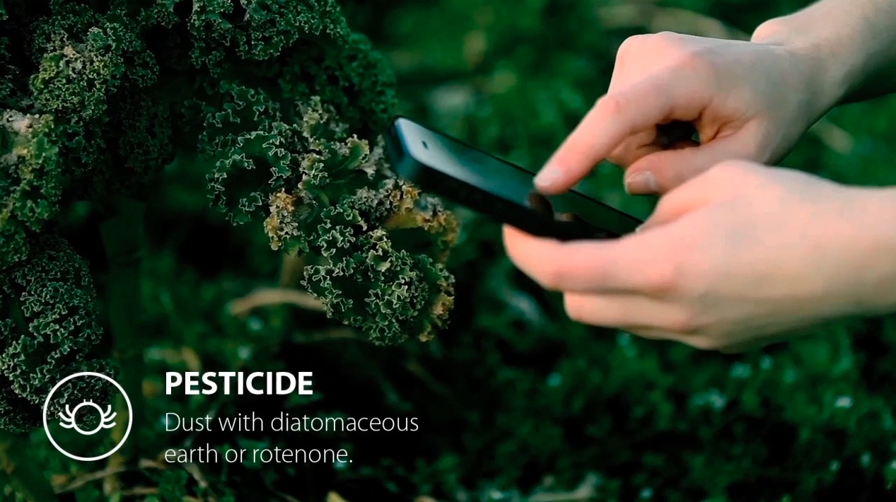

Farm Hand
Background
This project is for 2014 Microsoft Design Expo, and this year's topic is "Design for Millions of Sensors". After several interative hot brainstormings, we were so interested in "Plant Intelligence". Then, we researched a lot and tried to find out a specific problem in real life. We decided to target organic farming, and aim to design a system that capture and visulize data and to help farmers better care of their plants and manage their farms.
My Role: We worked together during the whole process, from ideation, research, to video prototype. Specifically, I contributed mainly to idea generation, secondary research, expert interview, existing concepts analysis and video prototype, and minorly to user interface design.
Collaborator: Randy Huynh, Gavia Angell, Noble Woods, Stepanie Lin, and Cheryl Wang.
Design Process
Problem Statement
Enable informed and sustainable farming practices by providing users with the information and actions needed to save resources and prevent environmental degradation.
Research
1. Literature Review: We mainly relied on THE INTELLIGENT PLANT written by Michael Pollan. It said that plants have a kind of “intelligence” that humans are only recently becoming aware of: complex defense mechanisms, networks that communicate across huge distances, and the ability to exchange information and resources. Meanwhile, we did a lot agriculture research, to know more about the agriculture community, including general problems, existing technologies, and agriculture data visualization.
2. Experts and Farmers Interview: We interviewed Dr.Britney Moss an expert in plant bioengineer to know about current research and implementation of plant biology, at the same time, also interviewed three farmers, to know about how they managed their farms and the problems they faced.
Research Conclusion: The problems farmers are faced are pests, plant disease, soil quality and content and irrigation, and also it is so labor and time consuming for farmers to manage their large-scale farms. Technologies, like wearable sensor dvices, RFID, remote sensor system have been implemented into agriculture, especially Precision Agiruculture, leveraging sensors system to improve agriculture efficiency, we tended to build our system based on this new technology.
Concept
Smart-Dust Sensors Network System
Farmers and home-gardeners spread smart-dust on their beds and fields to create a system of sensors to monitor plant health, soil and climate conditions. Information from the sensors feeds into an application, creating a map of contextual and relevant farming iformation.
There are three subsystems: nutrient and water management, plant and crop scheduling, pest control and containment systems
Prototype
We designed (we discussed the information archtecture, content and user flow and interactions together, the interface is mainly designed by Randy) both mobile and tablet interface.
We created three scenarios -- Large-Scale Farm, Community Garden and Farm Garden for our video prototype. The storytelling is really important and useful for us to express our concept ideas.
Deliverables
Final Presentation, Video Prototype, Process Book
Methods and Tools
Brainstorming, Expert Interview, Semi-Structured Interview, Sketching, Wireframing, Paper Prototype, Storytelling, Video Prototype, Presentation
Adobe Illustrator, Apple Keynote
My Ideas

Overview-Map Sketch (me)

Smart-Dust Sensors Network System

Nutrient and Water, Scheduling, and Pests Subsystems

Interface

Video Prototype



{kind=link}